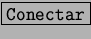

Luego de pulsar , el programa de Conexión a Internet, llamado kppp, transfiere los datos ingresados al pppd para que este realice la conexión en si.
El pppd es llamado también demonio pppd y en el caso de que no se pueda conectar, puede surgir con varios cuadros de diálogo.
Uno muy común y con poca referencia es el que dice: ``El demonio pppd murió inesperadamente''. Esta frase suena absurda en especial a usuarios recién iniciados en Linux.
Normalmente cuando el proveedor de Internet corta la conexión sin motivo, aparece el demonio muerto. Y esto puede ser por diversos motivos: